Analysis Overview
This report presents a comprehensive gene-centric analysis of genomic variants across different treatments and adaptations.
The analysis maps variants to genes based on scaffold assignments, identifying genes that are enriched for variants in specific conditions.
Analysis Summary
Total Treatments Analyzed: 7
Total Variants: 838
Total Genes with Variants: 8
Enriched Genes Identified: 11
Key Findings
- WT-37 (Temperature-adapted wild type) has the highest number of variants (172)
- CAS (CAS gene with temperature adaptation) has the highest number of variants (168)
- STC (STC gene with low oxygen adaptation) has the highest number of variants (168)
- Gene ERG24 (hypothetical protein) shows 3.0x enrichment in the WT-37 treatment
- Gene ERG24 (hypothetical protein) shows 2.9x enrichment in the STC treatment
- Gene ERG24 (hypothetical protein) shows 2.8x enrichment in the CAS treatment
- The most similar treatments in terms of gene variant patterns are CAS vs CAS-CTRL (correlation: 1.00)
Variant Distribution by Treatment

Variant Distribution by Adaptation
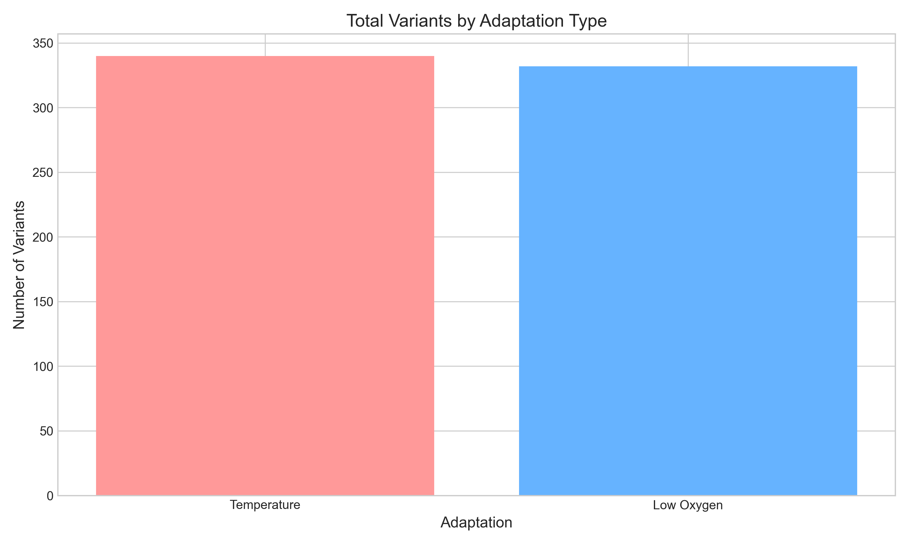
Gene Categories with Variants
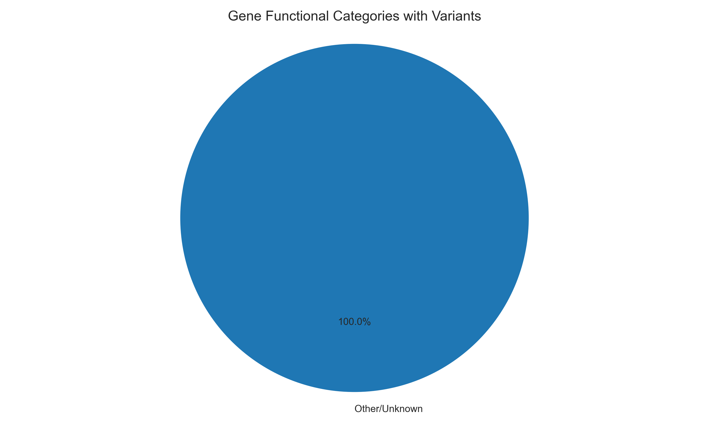
Treatment Analysis
This section shows the distribution of variants across different treatments and adaptations.
Treatment Statistics
| Treatment |
Description |
Adaptation |
Gene Modified |
Total Variants |
Genes |
Global Density |
| WT-37 |
Temperature-adapted wild type |
Temperature |
No |
172 |
8 |
0.0000 |
| CAS |
CAS gene with temperature adaptation |
Temperature |
Yes |
168 |
7 |
0.0000 |
| STC |
STC gene with low oxygen adaptation |
Low Oxygen |
Yes |
168 |
8 |
0.0000 |
| WTA |
Low oxygen-adapted wild type |
Low Oxygen |
No |
164 |
7 |
0.0000 |
| CAS-CTRL |
CAS gene control |
None |
Yes |
58 |
7 |
0.0000 |
| STC-CTRL |
STC gene control |
None |
Yes |
56 |
7 |
0.0000 |
| WT |
Wild type control |
None |
No |
52 |
7 |
0.0000 |
Genes with Variants by Treatment
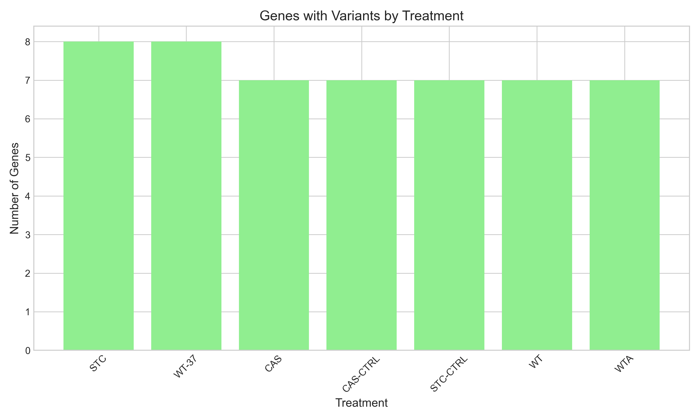
Treatment Enrichment Plots
These bubble charts show gene enrichment by treatment, with bubble size indicating variant count.
CAS Treatment
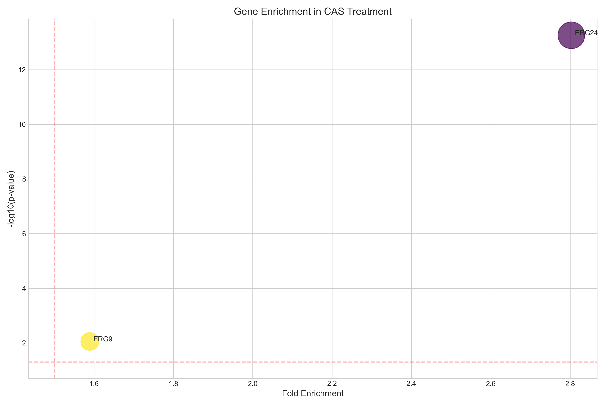
CAS-CTRL Treatment
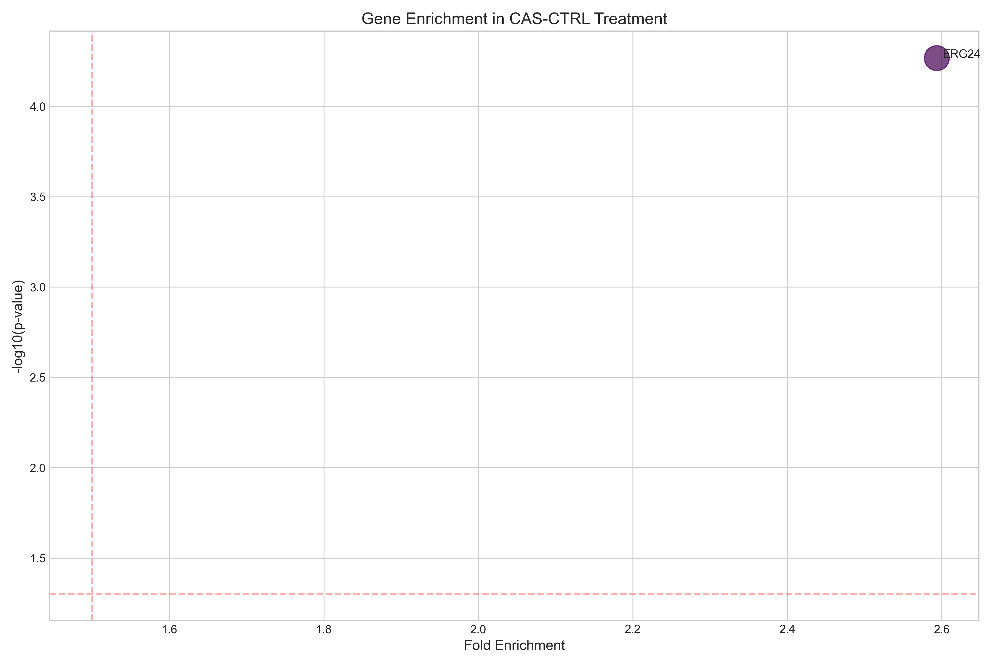
STC Treatment
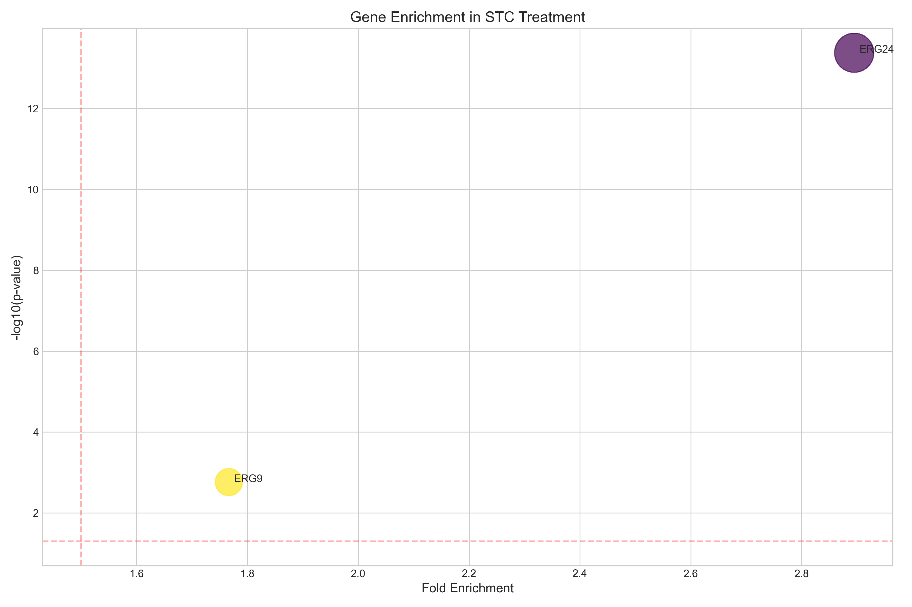
STC-CTRL Treatment
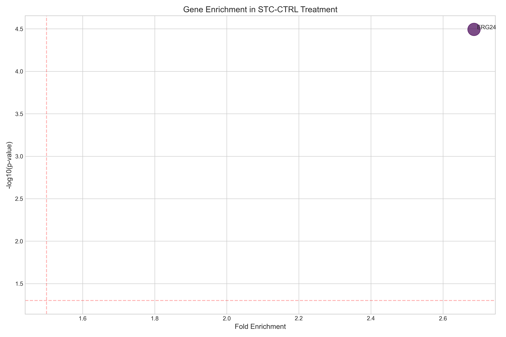
WT Treatment
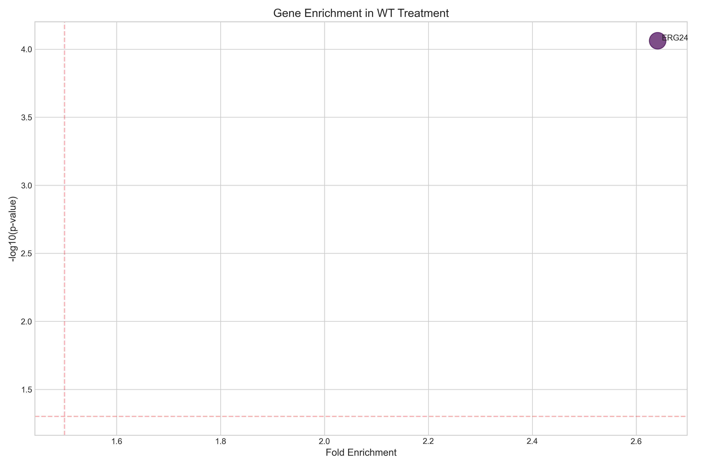
WT-37 Treatment
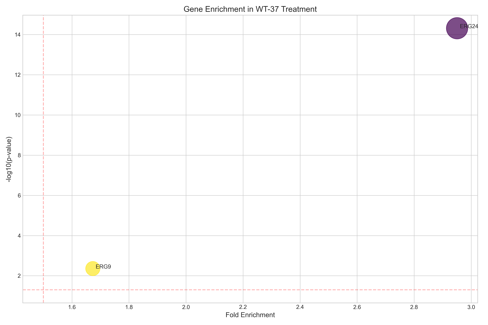
WTA Treatment
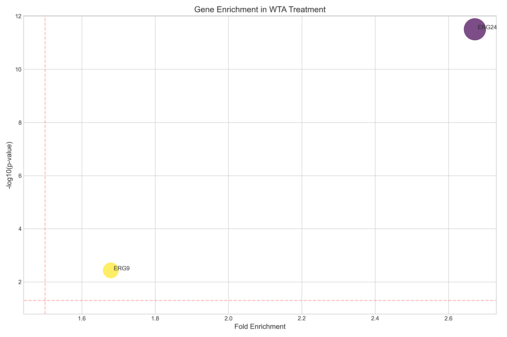
Gene Analysis
This section provides details on the distribution of variants across genes.
Top Genes by Variant Density
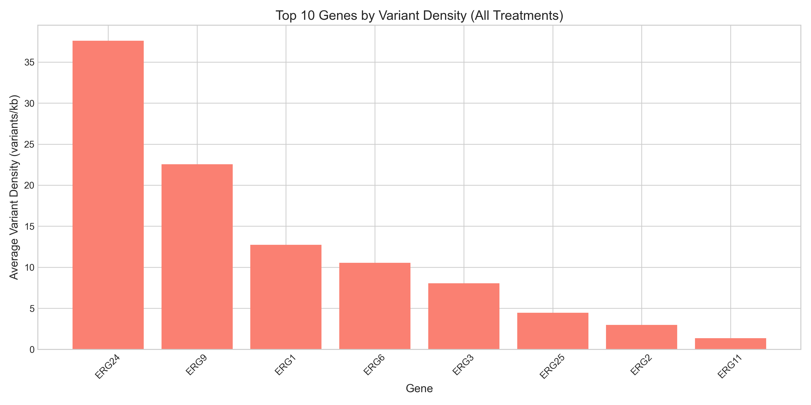
Clustered Heatmap of Gene Variant Densities
This heatmap shows the variant densities for the top 50 genes across all treatments,
clustered to reveal patterns of similarity.
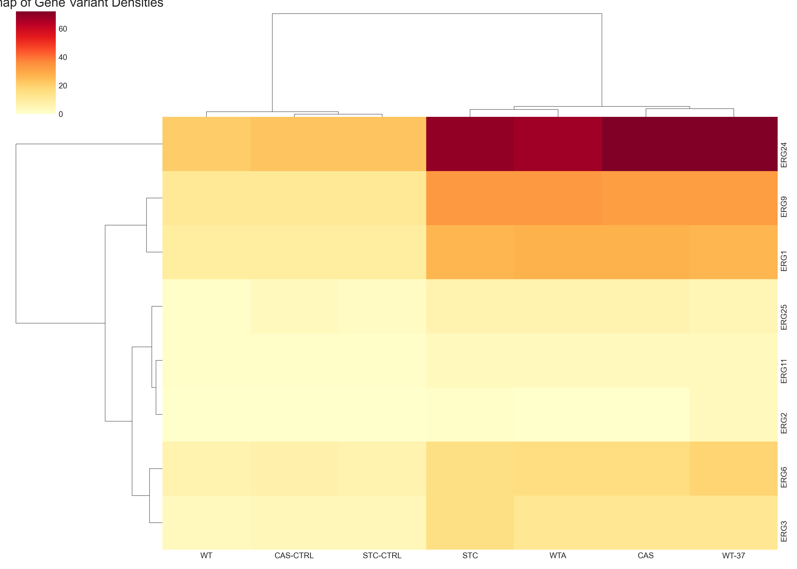
Gene Enrichment Analysis
This section shows statistical enrichment of variants in specific genes.
Enrichment Heatmap
This heatmap shows the fold enrichment of the top enriched genes across treatments.
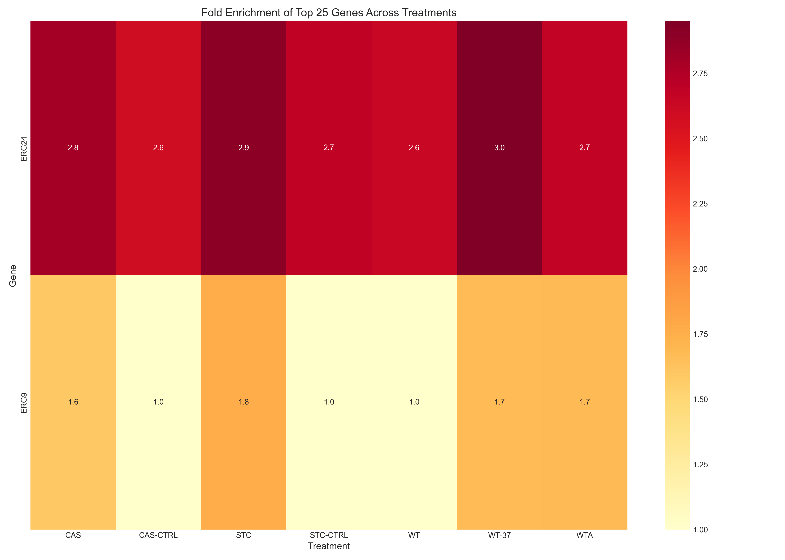
Top Enriched Genes
| Treatment |
Gene |
Product |
Density |
Fold Enrichment |
P-Value |
| WT-37 |
ERG24 |
hypothetical protein |
54.6282 |
2.95x |
4.85e-15 |
| STC |
ERG24 |
hypothetical protein |
52.3520 |
2.89x |
4.19e-14 |
| CAS |
ERG24 |
hypothetical protein |
54.6282 |
2.80x |
5.54e-14 |
| STC-CTRL |
ERG24 |
hypothetical protein |
17.4507 |
2.69x |
3.20e-05 |
| WTA |
ERG24 |
hypothetical protein |
50.8346 |
2.67x |
3.13e-12 |
| WT |
ERG24 |
hypothetical protein |
15.9332 |
2.64x |
8.64e-05 |
| CAS-CTRL |
ERG24 |
hypothetical protein |
17.4507 |
2.59x |
5.39e-05 |
| STC |
ERG9 |
hypothetical protein |
31.9458 |
1.77x |
1.72e-03 |
| WTA |
ERG9 |
hypothetical protein |
31.9458 |
1.68x |
3.68e-03 |
| WT-37 |
ERG9 |
hypothetical protein |
30.9777 |
1.67x |
4.39e-03 |
| CAS |
ERG9 |
hypothetical protein |
30.9777 |
1.59x |
8.83e-03 |
Comparative Analysis
This section compares variant patterns between treatments and adaptations.
Treatment Correlation Heatmap
This heatmap shows the correlation of gene variant patterns between treatments.
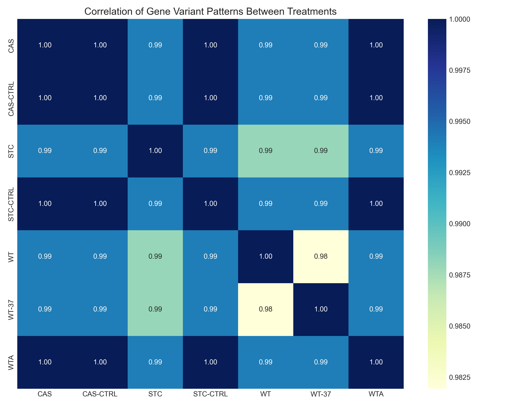
Top Treatment Correlations
| Treatment Pair |
Correlation |
| CAS vs CAS-CTRL |
1.0000 |
| CAS vs STC-CTRL |
1.0000 |
| CAS vs WTA |
1.0000 |
| CAS-CTRL vs STC-CTRL |
1.0000 |
| CAS-CTRL vs WTA |
1.0000 |
| STC-CTRL vs WTA |
1.0000 |
| CAS vs STC |
0.9940 |
| CAS vs WT |
0.9940 |
| CAS vs WT-37 |
0.9940 |
| CAS-CTRL vs STC |
0.9940 |